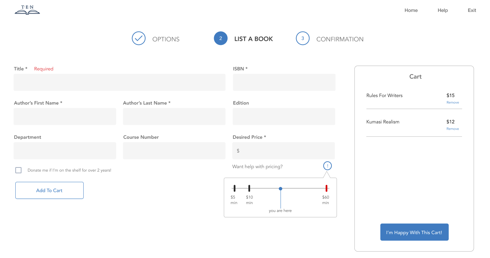
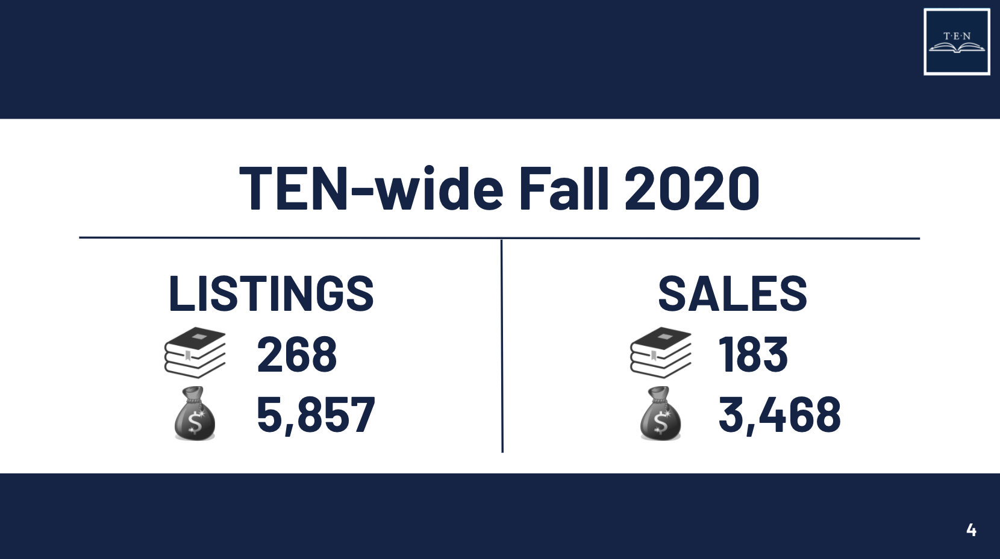
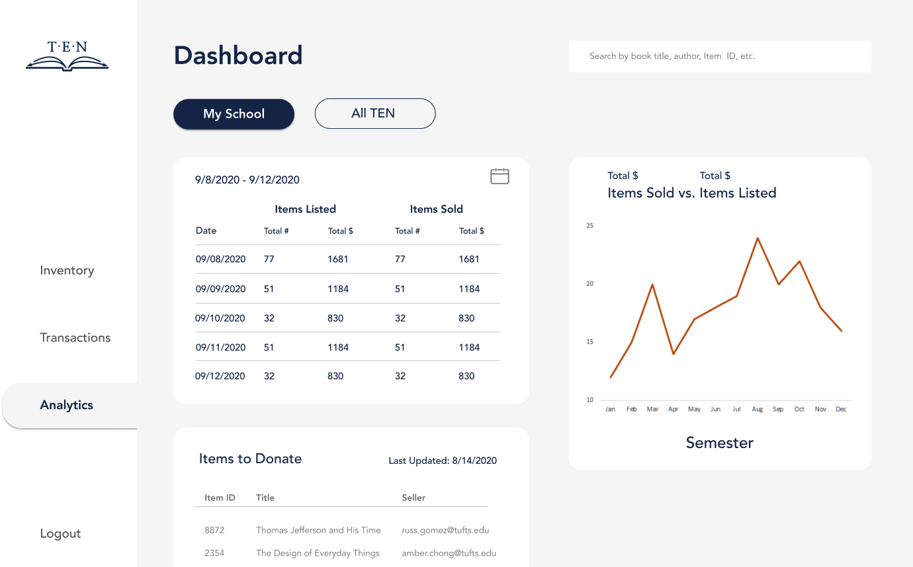

Textbook Exchange Network
Preface
Textbook Exchange Network (TEN) is a student-run textbook market. We help students to buy and sell their textbooks, in an effort to offset the high costs of college.We were founded in 2016 at Tufts University, but have since spread to a number of new campuses, including Northeastern University, Wesleyan University, and others. Our business model reduces inefficiencies in on-campus textbook exchange markets and facilitates the exchange of over $100,000 worth of textbooks each year!
I joined TEN in January 2019 because I am passionate about making education more accessible. As the Director of Data Analytics, I manage a team of 4 people and work cross-functionally with software engineers to integrate data into public-facing software features. I also work with the marketing team and members of the executive board to inform business decisions through statistics, analytics, and visualizations. TEN has been one of the most fulfilling parts of my college experience thanks to the people I get to work with! It has also been the perfect playground in which to apply new skills and wear many different hats that expose me to our full tech stack.
Details
Date: January 2020Close Team Members: Sejal Dua, Philip Miller, Emerson Wenzel, Kevin Bae, Albert Tseng, Amber Chong
Related: #Startup #WebApp #Accessibility #Education #DataAnalytics
Tech Stack: Python, PostgreSQL, Django, Heroku, React, Redux, Jupyter Notebooks
Responsibilities
Gather data-driven insights from 6000+ API exchanges representing textbook transactions that have saved students over $500,000 compared to campus bookstore prices.
Calculate key performance indicators (KPIs) via SQL queries and Python statistical packages to measure the health and wealth of the organization. Identify trends across campuses and think critically about ways to improve our process.
Manage a team of computer science and data science students through numerous cycles of data cleaning, exploratory data analysis, integration, visualization, and presentation at monthly showcases.
Produce an analytics report of critical statistics and other interesting trends (e.g. customer insights, sales breakdown by department, and/or university growth with respect to time) for each quarterly TEN board meeting.
Contributions
Implemented a price recommendation algorithm to inform seller pricing decisions based on historical data.

Wrote Python scripts and SQL queries which can be ran at any time to compute KPIs based on all API exchanges to date.

Implemented analytics dashboard functions in Python to aggregate textbook exchanges based on input parameters such as university name, start date, end date, and transaction type (i.e. listing or sale). Our internal analytics dashboard is currently under construction! ... but for the time being, here is a mockup thanks to our lovely design team.
